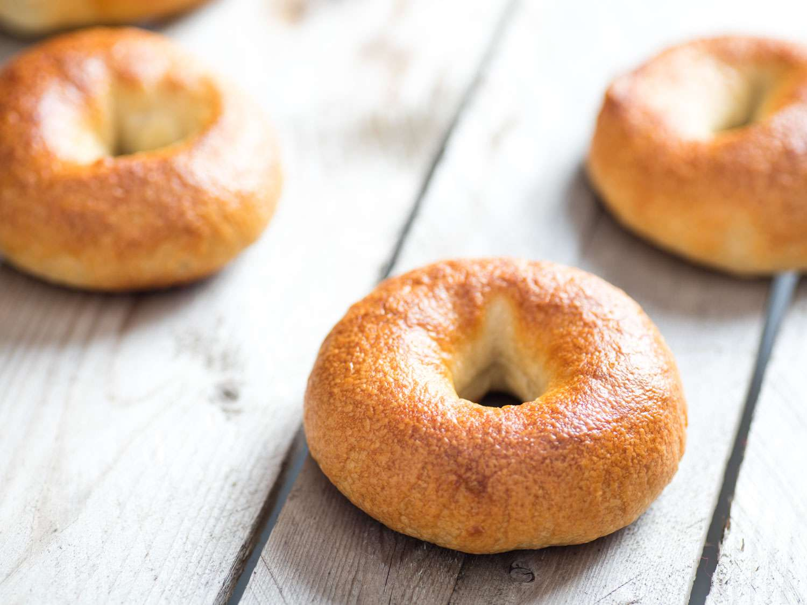

Pumpkin Spice Bagel
These simple bagels have a wonderful cinnamon and pumpkin flavor.

Ingredients
- 1 (.25 ounce) envelope active dry yeast
- ⅔ cup warm water (110 degrees F/45 degrees C)
- ⅓ cup packed brown sugar
- 1 ½ teaspoons ground cinnamon
- ¾ teaspoon ground nutmeg
- ½ teaspoon ground allspice
- ½ teaspoon ground cloves
- 3 cups all-purpose flour, or more as needed
- 6 cups water, or more as needed
Directions
Step 1: Dissolve yeast in warm water in a large bowl; add pumpkin, brown sugar, cinnamon, salt, nutmeg, allspice, and cloves and mix well. Stir in enough flour to make a soft dough. Turn dough onto a work surface and knead by hand 6 to 8 minutes or mix in a stand mixer. Transfer dough to a greased bowl, cover with a damp towel, and let rise in a warm place until doubled in size, about 1 hour.
Step 2: Punch dough down and divide into 8 balls. Poke a hole in the middle of each ball using your finger to create a bagel shape. Arrange bagels on a baking sheet and let rise, 10 to 15 minutes.
Step 3: Fill a large pot with 6 cups water and white sugar and bring to a boil. Slightly flatten the bagels and drop a couple at a time into the boiling water; cook for 1 1/2 minutes. Flip bagels and boil for another 1 1/2 minutes; remove with a slotted spoon and dry on a clean towel. Repeat with remaining bagels.
Step 4: Preheat oven to 400 degrees F (200 degrees C). Spray a baking sheet with cooking spray and sprinkle cornmeal on the sheet. Arrange bagels on the baking sheet about 2 inches apart.
Step 5: Bake in the preheated oven until cooked through, 25 to 30 minutes.
Cook's Note
This can also be made in a bread machine on the dough cycle. The only adjustments are to use 70 degree F (21 degrees C) water, and check the dough after 5 minutes to make sure the dough is the correct consistency (add water or flour accordingly). After it has risen continue on with step 2 (forming the bagels).